Jilin City is one of the prefecture-level cities under the jurisdiction of Jilin Province, the second largest city in Jilin Province, an important tourist city in the Northeast and a chemical industrial base. Jilin City is located in the eastern part of central Jilin Province, 124 kilometers away from the provincial capital Changchun.
Jilin City against the mountains and by the river, "Jilin Wula" is the first name of the Jilin City, the name means a city surrounded by the river. So a lot of located people prefer to called it the "River City".You could appreciate the beautiful scenery in everywhere. The Songhua River is released by the Emperor Kangxi's East Tour Jilin City. "Song" means "continuously connecting the ship to the river city", so Jilin City is also known as "Northern River City".people always amazing that the river never freeze even though in the cold winter. Due to the Songhua river, Jilin City has a beautiful typical scenery-----Jilin Rime. In the winter ,the rime attract a lot of travelers from all over the country.
Songhua Lake Scenic Area is a famous tourist scenic spot in Jilin Province, and the national AAAA-level scenic spot. It is located in the southern suburb of Fengman District, Jilin City, Jilin Province, 15 kilometers away from the main city. The waters are vast, the lakes are numerous, and the shape is like a dragon. The lake is narrow and long, with a maximum width of 10 kilometers. The lake area is 554 square kilometers. The average water depth is 22 meters, the deepest point is 77.5 meters, and the maximum water storage capacity is 10.8 billion cubic meters. Songhua Lake attracts a large number of domestic and foreign tourists due to its unique geographical location, four distinct seasons, and beautiful lakes and mountains.
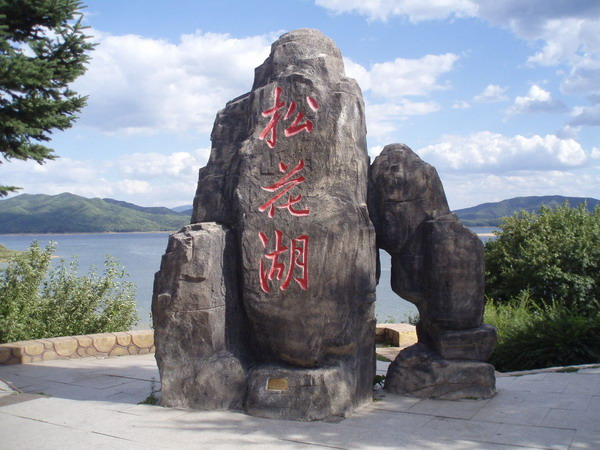 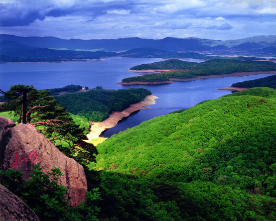 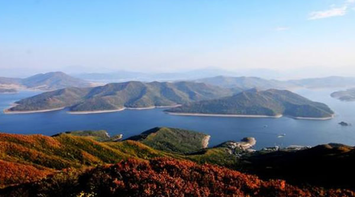Located in Fengman District of Jilin City, Zhuque Mountain is 10 kilometers south of Jilin City and only 2 kilometers away from Jilin Songhua Lake Scenic Area. It is one of the four famous mountains in Jilin City (Longtan Mountain, Baishan Mountain, Beishan Mountain and Suzaku Mountain). The main peak of the Dream Peak is 817 meters above sea level. On the foot of the mountain, there is a stone carving of the Ming Dynasty, the key protected cultural relics of Jilin Province. The geological age is the Cenozoic Quaternary sedimentary rocks. For thousands of years, the crustal rock formation has been subjected to tectonic stress, forming the surface of the rolling undulating mountain body, which has created the unique scenery of Suzaku Mountain. In 2001, it was approved by the State Forestry Administration as a national forest park.
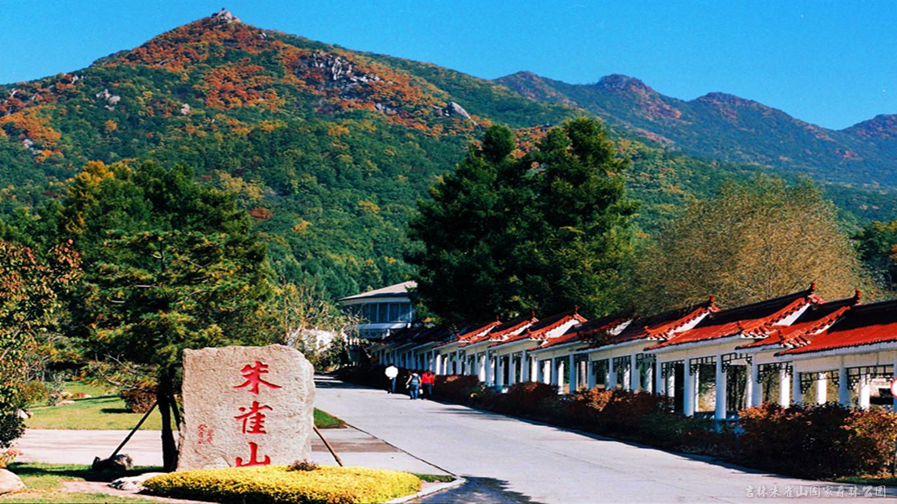 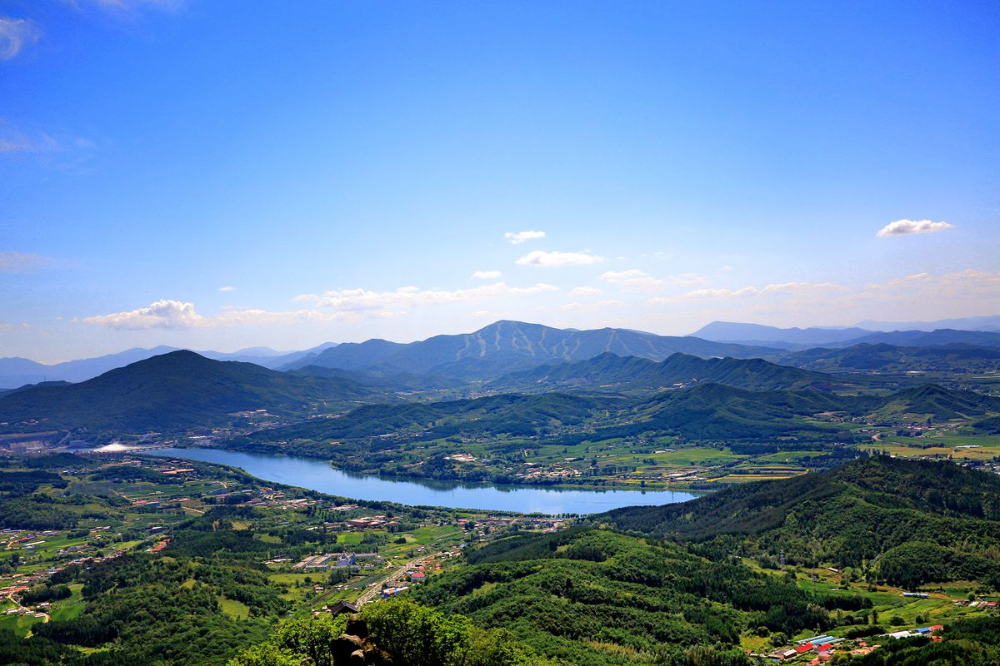Jilin City is listed on the list of the best commercial cities in Forbes China.Jilin City is one of the birthplaces of Manchu. It has 35 ethnic groups living in like Han, Man, Mongolia, Hui and North Korea. The citizens have a common character--kind, passion and hospitality. Receiving the breed form Songhua River, they learn one thing, never forget to thanksgiving.
Northeast Electric Power University (NEEPU) is located at Jilin City, Jilin province, a beautiful city with fine sceneries. Northeast Electric Power University is one of the key universities in Jilin province. Founded in 1949, it is the first electric power engineering school launched by the People’s Republic of China. In 1958, it was named Jilin Institute of Electric Power and in 1978, its name was changed to Northeast China Institute of Electric Power Engineering. In 2005, the univer-sity changed its name to Northeast Dianli University. In 2009, the university became a doctorate degree awarding project approval construction unit. In 2012, the university was selected as one of the key construction universities of "Midwest Universities’ Basic Capacity Construction Project". In 2016, the university changed its English name to Northeast Elec-tric Power Univer-sity.
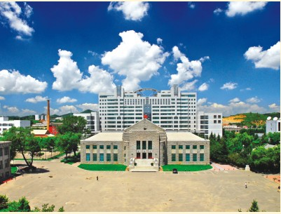 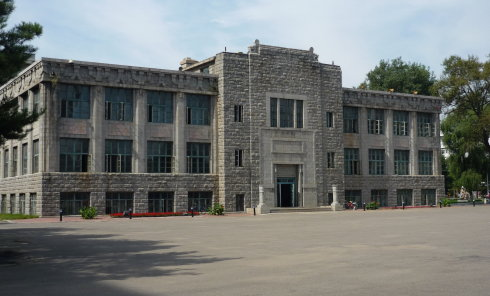 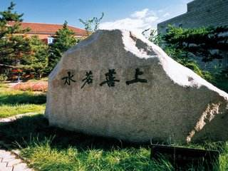NEEPU insists on taking teaching as its core mission, builds and keeps on optimizing the system of creative talents actively. At present, NEEPU has 5 special majors at the national level, and 4 courses of NEEPU have been chosen as elaborate courses at the national level. NEEPU has 2 Experiment Education Model Center at the national level, 1 Virtual Simulation Experiment Teaching Center at the national level and 10 at the provin-cial level. Since the 11th Five-Year Plan, 3 teaching achievements have won outstanding prizes at the national level. NEEPU is one of the national education bases for university students’ cultural quality and one of the na-tional level training and scientific research bases for social sports talents. NEEPU is among the first batch of engineering practical education centers at the national level and it is one of the experimental universities of “ the Excellent Engineer Education and Training Plan”.It is also one of the national continuing education bases for professionals.
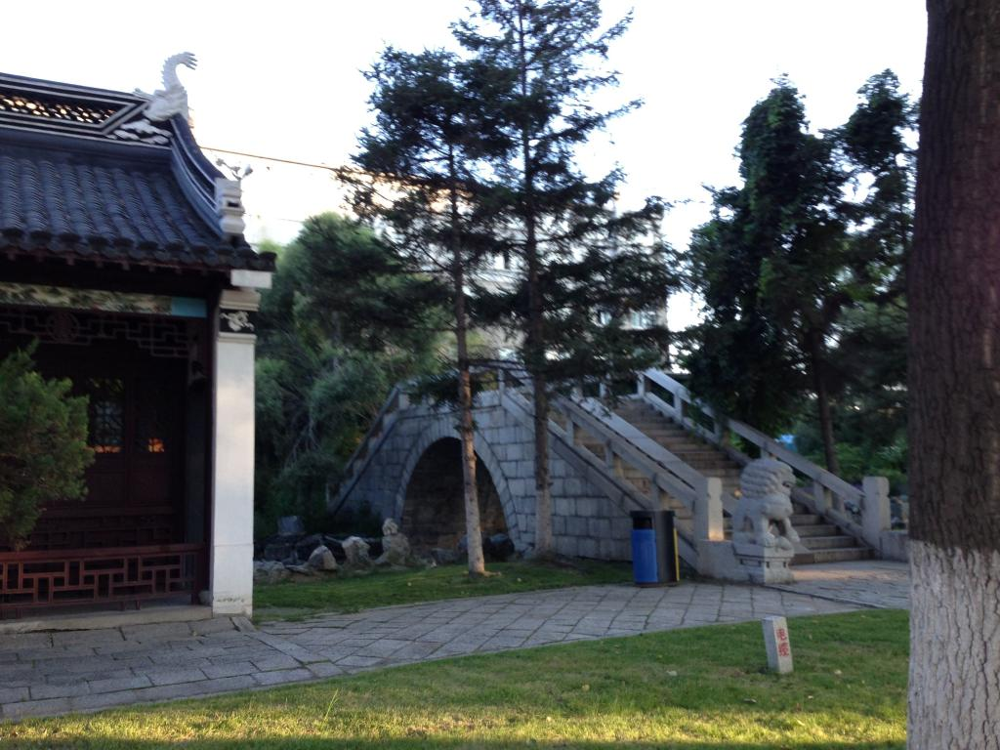 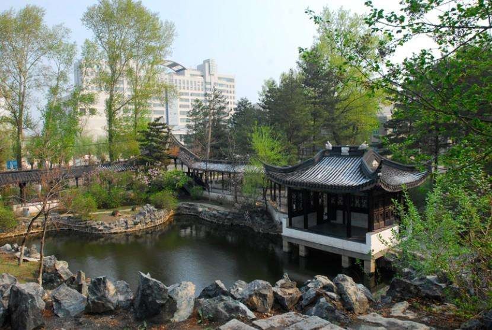 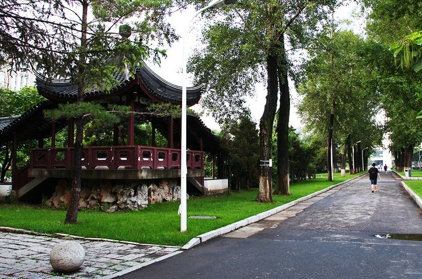NEEPU aims at beoming a satisfying univeristy of the public and educating qualified and reliable successors of the socialism during the 13rd Five-Year Plan. Taking satisfying the public and cultivating high-quality per-sonnel as its aims, carrying out the strategy of "Talent Strengthening the University, Creativity Driving the University,Characteristics Prospering the University" thoroughly,NEEPU keeps on freeing its mind, advancing with the times and being pioneering and creative.In order to become a high-level teaching and research univer-sity with distinctive characteristics, NEEPU is making great efforts continuously.